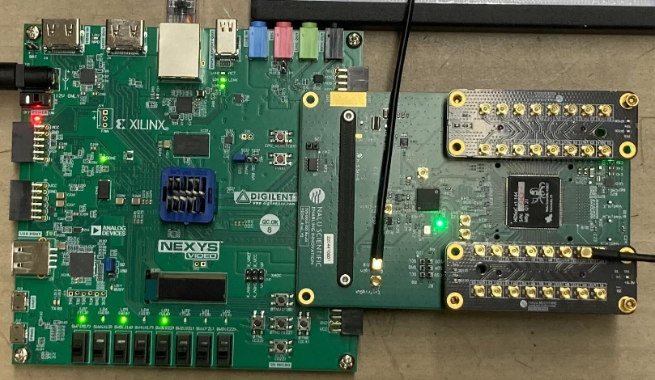
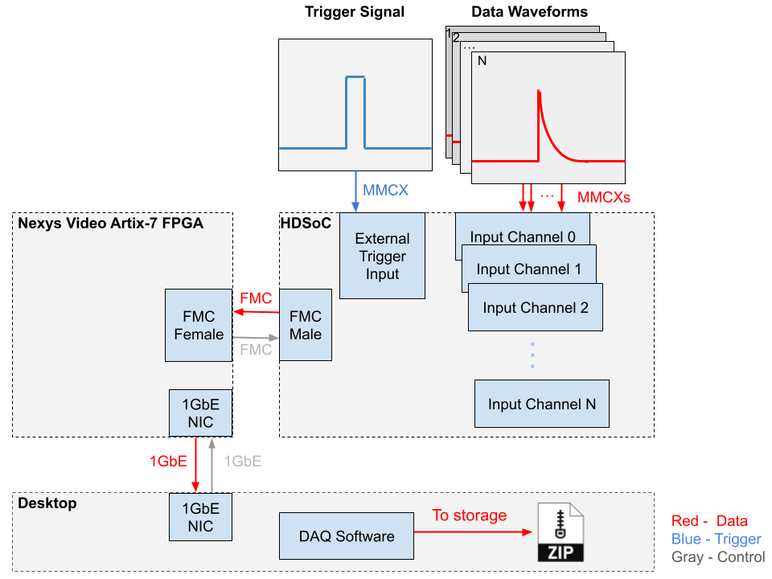
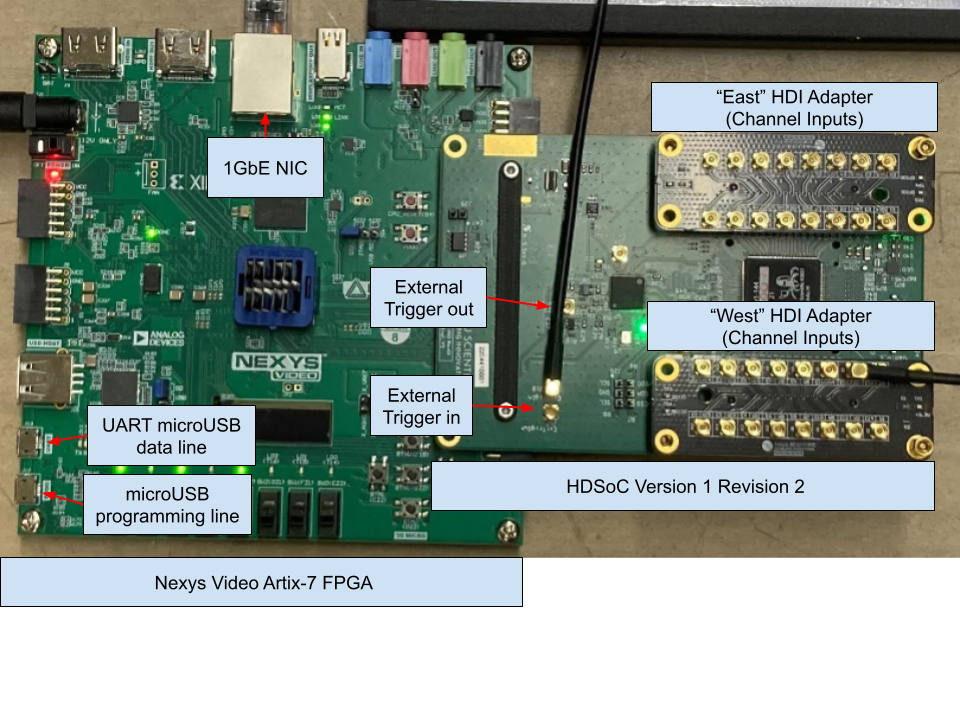
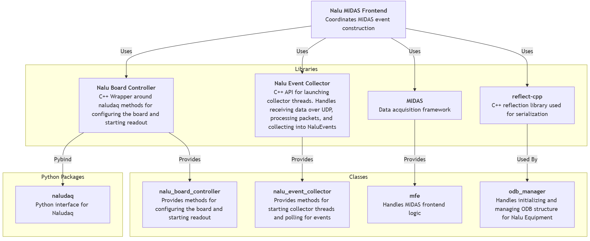
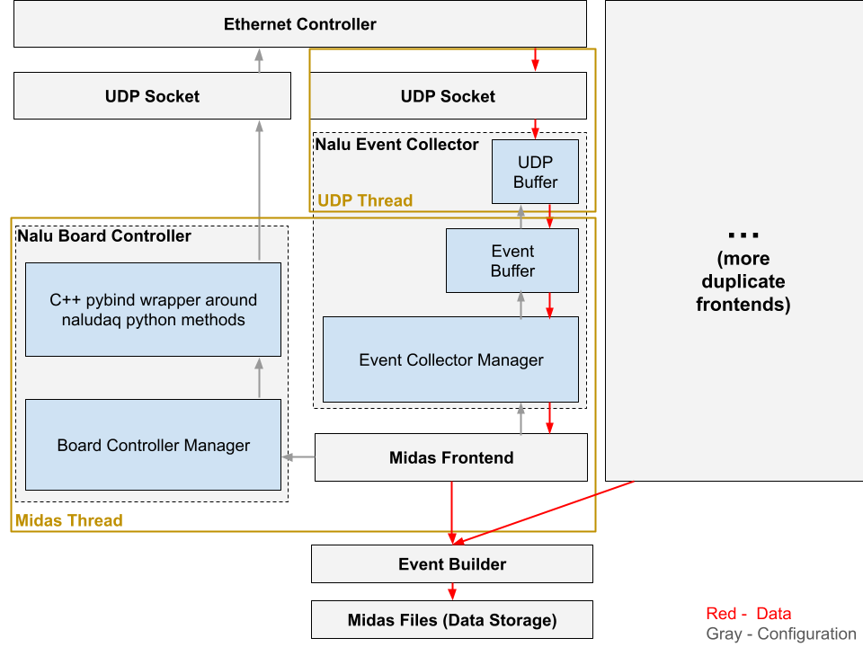

Welcome to the HDSoC DAQ Manual

The purpose of this manual is to aid users with setup, usage, and debugging of the HDSoC data acquisition (DAQ) system. This DAQ's purpose is to be used for readout of the Nalu's HDSoC FMC boards (and possibly other boards). Most topics are simplified to only include information needed for operating this DAQ. Some external links are provided for additional, generalized information.
Many of the guides on this webpage are thorough, as they are aimed to give solutions to problems I've encountered. However, every system is different; there may be some additional debugging to be done on the user's end.
PDF Version
A pdf version of this manual is automatically generated using MkDocs with pdf plugin.
Contact
Manual Written by Jack Carlton.
Ph.D. Candidate, Department of Physics and Astronomy, University of Kentucky.
Email: j.carlton@uky.edu
GitHub: jaca230
Feel free to reach out with any questions, to correct mistakes, point out missing information, or otherwise. Feel free to contribute additional information on github or otherwise.
Hardware
General Hardware Overview
Conceptual Diagram

- Trigger Signal: An external signal to tell the board when to digitize the input waveforms. Should be LVCMOS25 (0-2.5V) with width 10-100 ns.
- Waveforms: Analog signal to be digitized. Should be LVCMOS25 (0-2.5V). Max width is 1984 nanoseconds by default, but this depends on the sampling rate (default 1Gsps).
- HDSoC: Digitization board that handles inputs across multiple channels. Can be set to trigger on external or internal (self) signals.
- Nexys Video Artix-7 FPGA: Acts as a parent board to the HDSoC. Handles 1GbE communication and firmware storage among other things.
- Desktop: Receives and processes events that are effectively streamed from the digitization system.
Labled Picture

1GbE NIC (Gigabit Ethernet Network Interface Card)
Overview
These NICs are generally PCIe Cards that are "plug and play". They provide a 1 gigabit per second ethernet connection for the host computer.
Configuration
If you machine has a GUI, you may find it easier to edit network settings that way. Otherwise, you can edit settings from command line. For example for UKY's teststand we use:
nmcli connection modify enp3s0 \
ipv4.addresses 192.168.1.1/24 \
ipv4.method manual \
connection.autoconnect yes \
ipv6.method ignore
You may need to create a connection configuration file first if it doesn't exist. For example for UKY's teststand we use:
nmcli connection add type ethernet con-name enp3s0 ifname enp3s0
In particular, the ipv4.addresses is important. Here the port is specified to accept any traffic on the 192.168.1.xxx subnet. See the networking page for more details.
Nexys A7 Video Card
Overview
The Nexys A7 is a versatile and high-performance FPGA development board from Digilent, featuring the Xilinx Artix-7 FPGA. It is like the "mother board" for the HDSoC. For this use case it will provide power, an interface to update firmware, and an interface for data transfer. You can read more about this board on diligent's Nexys Video Artix-7 FPGA page.
FMCs
HDSoC
The HDSoC (or other nalu board) connects to the FPGA board via an FMC connector. See HDSoCv1 rev 2 for more info.
Wired Connections
USB A to microUSB
A USB A to microUSB can be used for UART communication. This can be used for data transfer via UART (very slow, limited to ~100 KB/s) and uploading firmware to the board. See the hardware diagram for port locations.
1GbE Connection
Connect an ethernet cable between the board and a host desktop computer. Most modern ethernet cables should work. See the hardware diagram for port locations.
Configuration
To congfigure the board, the appropriate firmware must be uploaded to it. This can be retrieved from nalu scientific's board downloads page. There are several options, the easiest two are:
- Use microSD card with loaded firmware (see HDSoC quickstart guide)
- Upload the firmware via Vivado
Steps to complete step 2 are below.
Downloading the firmware
Navigate to Nalu Scientific's support website. Go to the page for the HDSoCv1-evalr2 (or appropriate board). Download the most recent firmware version. This DAQ has been tested with firmware version 938. The file should be something like HDSoC_eval_v938.bit.
Downloading Vivado
Note: Vivado may take a long time to install because it is a very large program. This step could take serveral hours. A full Vivado installation can be around 200 GB. Below is a "minimal" installation that is ~50GB
The easiest way to upload firmware to the board is via Vivado. Download the most recent version of Vivado for your system from Xilinx's download page. You will need to make an account with AMD to install. This is easiest on a machine with a GUI. For a simple install follow these steps:
- Run installer. On linux run the bin file with
/path/to/.../installer.bin. - On the welcome page, hit next
- Enter credentials, download and install now, hit next
- Under products to install select Vivado, hit next
- For customizing the installation.
- Under "Design Tools" select only "Vivado Design Suite"
- Under "Devices" select only "Production Devices">"7 Series"
- Under "Installation Options", make sure you have "Install Cable Drivers" selected. Hit next.
- Agree to License agreements, hit next.
- Select which directory to install to. Hit next. Begin installation.
Uploading Firmware
Once Vivado is installed run it. On linux you may need to source the settings file with source /path/to/.../Xilinx/Vivado/202x.x/settings64.sh, then you can run the command vivado to launch vivado.
A new project needs to be created. This can be a "dummy" project since we're just uploading firmware. Step 1 of this guide gives all the details needed to creatae new project.
To load firmware onto the Nexys A7 using Vivado, plug the USB A to microUSB connection into the program port of the Nexys A7 board. See the hardware diagram for port locations. Follow these steps to upload firmware such that it persists when the board reboots:
- Open Vivado Hardware Manager and Connect to the Board
- Open Vivado and go to Tools > Hardware Manager. Hardware Manager should also be visible on the left sidebar of the project page.
-
In the Hardware Manager window, click Open Target and select Auto Connect or choose the appropriate JTAG or USB connection to connect to your board. If the board is connected properly, Vivado should automatically detect it.
-
Convert the Bitstream to a Binary File To program the flash, you need to convert the bitstream to a binary file. Nalu provides
.bitfiles, but we can convert the.bitfile into a.binfile. Here’s how you can do it: -
After the bitstream is generated, open the TCL Console (Window > Tcl Console) and use the following command to generate the
.binfile from the.bitfile:write_cfgmem -force -format bin -interface SPIx4 -size 32 -loadbit "up 0x0 /path/to/input/firmware.bit" -file /path/to/output/firmware.binReplace the paths with the appropriate file locations for your system.
Example:
write_cfgmem -force -format bin -interface SPIx4 -size 32 -loadbit "up 0x0 /home/pioneer/vivado_stuff/Nexsys_Video_A7_For_HDSoc/HDSoC_eval_v938.bit" -file /home/pioneer/vivado_stuff/Nexsys_Video_A7_For_HDSoc/HDSoC_eval_v938.bin -
Add Configuration Memory Device Once the
.binfile is ready, go back to the Hardware Manager in Vivado and: -
Right-click on your connected device in the Devices pane (in the Hardware Manager).
- Click Add Configuration Memory Device.
- In the dialog box, select the appropriate part for your flash device. For the Nexys A7, the part number will likely be something like S25FL256Sxxxxxx0-SPI-x1_x2_x4.
-
Click OK to confirm.
-
Program the Flash Memory After selecting the configuration memory device:
-
Vivado will prompt you to program the flash memory.
- Select the firmware
.binfile you generated earlier. -
Click Program to start the flashing process. The process will take some time depending on the size of your firmware file and the connection speed.
-
Power Cycle the Device After programming is complete, power down the device and power it back on. Once powered on, you should see indicators (such as green lights on the HDSoC board) signaling that the firmware has been loaded successfully.
HDSoCv1 rev 2
Overview
The HDSoC is a high density digitizer system on a chip evaluation board. It provides a flexible digitization system. The high density part makes it appealing to for use in the ATAR DAQ, as the ATAR will have thousands of channels. You can read more in the HDSoC product sheet or on Nalu Scientific's HDSoC page.
Wired Connections
MMCX connector
The HDSoC's inputs (channel inputs and external trigger) and outputs (external trigger output) use a MMCX connectors. See the labeled picture and conceptual diagram to see where these inputs are on the board.
Configuration
See the HDSoC quickstart guide. You don't need to worry about using the SD card to boot the firmware if you've already uploaded it.
General Sofware Overview
Software Dependency Diagram

Note: an SVG version of this diagram with links to each repository is avaiable here.{kind=link}
Software Data and Control Flow Diagram

- Ethernet Controller: The systems ethernet controller which sockets are formed on.
- UDP Socket: Two sockets are constructed. One by the Python board-control stack to communicate with the board and one by the UDP receiver to receive data.
- Nalu Event Collector: A library to collect events from a UDP socket receiving events from a nalu scientific board.
- UDP Buffer: Receives UDP packets and puts them in a buffer to be processed.
- Event Buffer: Processes UDP packets into events and puts them in a buffer.
- Event Collector Manager: Manages interfacing with the buffers. I.e. getting data, configuration, etc.
- Nalu Board Controller: C++ methods to configure the nalu scientific board to prepare for data taking.
- C++ pybind wrapper: C++ wrapper around the Python board-control stack.
- Board Controller Manager: Manages interfacing with the board from another C++ program.
- Midas Frontend: Handles run control, configuration via ODB, data bank creation, etc. Interfaces with the board controller and event collector.
- Event Builder: Builds events from data banks provided by potentially multiple frontends. Not necessary if only using one frontend.
HDSOC_DAQ
Overview
The HDSoC DAQ software is a MIDAS frontend that interfaces with several other softwares (see software dependencies page) to read out events from a nalu scientific board while working within the MIDAS framework.
The installation chain is now split into two parts:
- External dependencies that must already exist on the host, especially MIDAS and optionally ROOT.
- Dependencies that are handled by this repository itself, either through a repo-local Python virtual environment or through CPM during the CMake configure step.
Installation
Make sure you have installed the development tools, the Python packages, and MIDAS before continuing. If you need private repository access, also make sure you have set up access to the PIONEER experiment repository.
1 Clone the repository:
git clone git@github.com:PIONEER-Experiment/hdsoc_daq.git
cd hdsoc_daq
2 Set up the environment
The main shell entrypoint is now:
source ./scripts/environment/activate_environment.sh
This helper will:
- detect and save
MIDASSYS,MIDAS_EXPTAB, andMIDAS_EXPT_NAMEif needed - create or refresh the repo-local Python environment if needed
- activate the repo-local Python environment
- isolate the runtime from user-site Python packages
If you only want to detect and save the MIDAS-related variables without activating the Python environment, run:
./scripts/environment/helpers/detect_midas_environment.sh
This writes:
scripts/environment/helpers/environment_variables.sh
Check that file to make sure it contains the correct paths. For example:
export MIDASSYS=/home/pioneer/packages/midas
export MIDAS_EXPTAB=/home/pioneer/packages/online/exptab
export MIDAS_EXPT_NAME=ATAR_DAQ
export ATAR_DAQ_DIR=/home/pioneer/packages/experiments/hdsoc_daq
If you want to create or refresh only the repo-local virtual environment, run:
./scripts/environment/helpers/setup_venv.sh
3 Build
Once MIDASSYS points to a working MIDAS install, build with:
./scripts/build.sh
If you want to force a clean reconfigure first:
./scripts/build.sh --overwrite
During the CMake configure step, CPM automatically fetches and configures several C++ dependencies, including:
nalu_event_collectornalu_board_controllerreflect-cppspdlognlohmann/jsonpybind11
So these no longer need to be installed manually as part of the normal hdsoc_daq setup flow.
Running
Starting a Midas Webpage
Midas provides a great user interface via their webpage. To start it, use the helper script:
./scripts/webpage_scripts/start_midas_webpage.sh
Then navigate to localhost:8080 in your favorite web browser.
Note: If the webpage doesn't appear, manually run mhttpd to debug the error output.
Manually Starting the Frontend
I recommend doing this the first time to make sure everything is working properly.
./scripts/run.sh -i 0
Some useful options are:
./scripts/run.sh --build -i 0
./scripts/run.sh --debug -i 0
./scripts/run.sh --setup-venv -i 0
./scripts/run.sh --system-python -i 0
Starting the Frontend as a Screen
Use the screening helper script:
./scripts/screen_control/screen_frontend.sh -i {index}
Note: Excluding the -i flag sets the index to 0. This is the frontend index used to support running multiple frontends.
To stop the screen:
./scripts/screen_control/stop_screen.sh -i {index}
Starting the Frontend as Midas Program
See the g-2 modified DAQ Manual's guide for adding program startup scripts. For the start command, use the screen command above.
Configuration
See the ODB configuration page for a description of each ODB setting.
Software Dependencies
PIONEER Repository
Some installations are on the PIONEER repository, which requires access to pull from. See how to get access.
Development Tools
Overview
These tools include compilers, CMake, Python development support, and other utilities that facilitate software development and installation.
Installation Guide
This guide should work for ALMA9. You can use dnf for ALMA9, but I prefer to work with yum.
1 Install yum package manager
sudo dnf install yum
2 Update the package index
sudo yum update
3 Enable the EPEL repository
sudo yum install epel-release
4 Install Development Tools and Dependencies
sudo yum groupinstall "Development Tools"
sudo yum install cmake gcc-c++ gcc screen subversion binutils libX11-devel libXpm-devel libXft-devel libXext-devel python3 python3-devel python3-pip
5 Check the CMake version
cmake --version
hdsoc_daq currently requires CMake >= 3.23.
If the installed CMake version is too old, follow these steps to install a newer version manually:
wget https://github.com/Kitware/CMake/releases/download/v3.29.0/cmake-3.29.0.tar.gz
tar -xvzf cmake-3.29.0.tar.gz
cd cmake-3.29.0
./bootstrap
make -j$(nproc)
sudo make install
Always check Kitware's website for the current version before copying the version number above.
Python Packages
Overview
The DAQ still depends on a Python board-control stack even though the frontend itself is written mostly in C++. The current setup uses a repo-local virtual environment to hold the Python runtime needed by the board controller path.
Installation Guide
The recommended way to set this up is with the repo helper:
./scripts/environment/helpers/setup_venv.sh
This creates or refreshes a virtual environment at:
.atar_daq_venv
and installs the requirements from:
requirements/board_tools.txt
At the moment, that requirements file includes:
naludaq==0.36.0
naluconfigs==18.0.1
If you are not using the repo-local virtual environment, you will need those packages available in the Python environment used at runtime.
ROOT
Overview
ROOT is an open-source data analysis framework developed by CERN. It is needed for some MIDAS features.
Installation Guide
General installation guides are provided by ROOT at their Installing ROOT and Building ROOT from source pages.
Using yum Package Manager
1 Enable the EPEL repository
sudo yum install epel-release
2 Download and Install ROOT
sudo yum install root
Building from source
1 Example building latest stable branch from source
git clone --branch latest-stable --depth=1 https://github.com/root-project/root.git root_src
mkdir root_build root_install && cd root_build
cmake -DCMAKE_INSTALL_PREFIX=../root_install ../root_src
cmake --build . --target install -j4
source ../root_install/bin/thisroot.sh
Note: Adjust the ROOT version and the download URL as needed. Always check for the latest version on the official ROOT website.
Midas
Overview
Midas is a data acquisition system used in high-energy physics experiments. Midas provides the following functionalities:
- Run control
- Experiment configuration
- Data readout
- Event building
- Data storage
- Slow control
- Alarm systems
- ... much more ...
Installation Guide
For a general MIDAS installation, you can follow this Linux Quick Start Guide.
hdsoc_daq expects MIDASSYS to point to a working MIDAS install before configuration. In particular, the build checks for:
$MIDASSYS/include$MIDASSYS/lib/libmidas.a$MIDASSYS/lib/libmfe.a
For the g-2 modified DAQ, we use a custom version of MIDAS, which can be cloned and installed as follows:
1 Set experiment name environment variable
export MIDAS_EXPT_NAME=ATAR_DAQ
2 Create exptab file
mkdir online
cd online
touch exptab
echo "$MIDAS_EXPT_NAME $(pwd) system" >> exptab
export MIDAS_EXPTAB=$(pwd)/exptab
3 Install MIDAS
cd ..
mkdir packages
git clone --recursive git@github.com:PIONEER-Experiment/midas-modified.git midas
cd midas
mkdir build
cd build
cmake ..
make -j$(nproc) install
cd ..
4 Set MIDASSYS environment variable and add to path
export MIDASSYS=$(pwd)
export PATH=$PATH:$MIDASSYS/bin
Note: You can hardcode the environment variables MIDASSYS, MIDAS_EXPTAB, and MIDAS_EXPT_NAME by adding the appropriate commands to your .bashrc file. The repo also provides environment helpers documented on the scripts page.
5 (Optional) it is recommended to also install the MIDAS Python package
pip install -e $MIDASSYS/python --user
CPM Managed Libraries
Overview
Several dependencies used by hdsoc_daq are no longer meant to be installed manually as part of the normal setup flow. They are fetched automatically by CPM during the CMake configure step.
These include:
nalu_event_collectornalu_board_controllerreflect-cppspdlognlohmann/jsonpybind11
Installation Guide
No separate manual installation step is needed for the normal hdsoc_daq build. Once MIDASSYS is set and the Python environment is available, running:
./scripts/build.sh
will configure CMake and let CPM pull the required C++ packages automatically.
If you want to inspect or build these projects separately, see their upstream repositories:
Midas' Online Data Base Configuration Parameters
ODB Basics
See the g-2 modified DAQ's ODB Basics section for some general MIDAS ODB settings.
HDSoC DAQ specific ODB Configuration
Note: The HDSoC frontend initializes settings under:
/Equipment/HDSoC-{frontend #}/Settings
Some runtime values are derived from other ODB settings rather than stored directly as their own ODB entries. In particular:
nalu_event_collector/nalu_udp_receiver/addressandportare derived fromnalu_board_controller/nalu_capture/target_endpointnalu_event_collector/nalu_event_builder/channelsis derived from enabled channel entries undernalu_board_controller/nalu_capture/channelsnalu_event_collector/nalu_event_builder/windowsis derived fromnalu_board_controller/nalu_capture/readout_window/windowsnalu_event_collector/nalu_event_builder/trigger_typeis derived fromnalu_board_controller/nalu_capture/trigger/modenalu_event_collector/nalu_event_builder/wlc_modeis derived fromnalu_board_controller/nalu_capture/window_level_control/enabled
The settings below are the actual ODB entries initialized by the frontend.
Nalu Event Collector
Absolute Window Mask
| Field | Description |
|---|---|
| Path | /Equipment/HDSoC-{frontend #}/Settings/nalu_event_collector/nalu_packet_parser/abs_wind_mask |
| Description | Bit mask on the absolute window position bits. |
| Valid Values | Any bit mask, for example 63 = 0x3F. |
| Suggested Value | 63 |
Channel Mask
| Field | Description |
|---|---|
| Path | /Equipment/HDSoC-{frontend #}/Settings/nalu_event_collector/nalu_packet_parser/chan_mask |
| Description | Bit mask on the channel index bits. |
| Valid Values | Any bit mask, for example 63 = 0x3F. |
| Suggested Value | 63 |
Channel Shift
| Field | Description |
|---|---|
| Path | /Equipment/HDSoC-{frontend #}/Settings/nalu_event_collector/nalu_packet_parser/chan_shift |
| Description | Global shift in channel indices. |
| Valid Values | Any non-negative integer. |
| Suggested Value | 0 |
Check Packet Integrity
| Field | Description |
|---|---|
| Path | /Equipment/HDSoC-{frontend #}/Settings/nalu_event_collector/nalu_packet_parser/check_packet_integrity |
| Description | Whether each received UDP packet should be checked against the expected packet format. |
| Valid Values | yes or no |
| Suggested Value | no |
Note: Setting this to no is the current default in code.
Constructed Packet Footer
| Field | Description |
|---|---|
| Path | /Equipment/HDSoC-{frontend #}/Settings/nalu_event_collector/nalu_packet_parser/constructed_packet_footer |
| Description | Footer bytes for constructed packets. Potentially useful to consumer programs looking for a specific byte sequence. |
| Valid Values | Any non-negative 2 byte integer. |
| Suggested Value | 65535 |
Constructed Packet Header
| Field | Description |
|---|---|
| Path | /Equipment/HDSoC-{frontend #}/Settings/nalu_event_collector/nalu_packet_parser/constructed_packet_header |
| Description | Header bytes for constructed packets. Potentially useful to consumer programs looking for a specific byte sequence. |
| Valid Values | Any non-negative 2 byte integer. |
| Suggested Value | 43690 |
Event Window Mask
| Field | Description |
|---|---|
| Path | /Equipment/HDSoC-{frontend #}/Settings/nalu_event_collector/nalu_packet_parser/evt_wind_mask |
| Description | Bit mask on the event window position bits. |
| Valid Values | Any bit mask, for example 63 = 0x3F. |
| Suggested Value | 63 |
Event Window Shift
| Field | Description |
|---|---|
| Path | /Equipment/HDSoC-{frontend #}/Settings/nalu_event_collector/nalu_packet_parser/evt_wind_shift |
| Description | Global shift on event window values. |
| Valid Values | Any non-negative integer. |
| Suggested Value | 6 |
Packet Size
| Field | Description |
|---|---|
| Path | /Equipment/HDSoC-{frontend #}/Settings/nalu_event_collector/nalu_packet_parser/packet_size |
| Description | The size in bytes of one raw packet of channel information. |
| Valid Values | Any positive integer. |
| Suggested Value | 74 |
Start Marker
| Field | Description |
|---|---|
| Path | /Equipment/HDSoC-{frontend #}/Settings/nalu_event_collector/nalu_packet_parser/start_marker |
| Description | Start marker for a packet of channel information. |
| Valid Values | Any hexadecimal string. |
| Suggested Value | 0E |
Stop Marker
| Field | Description |
|---|---|
| Path | /Equipment/HDSoC-{frontend #}/Settings/nalu_event_collector/nalu_packet_parser/stop_marker |
| Description | Stop marker for a packet of channel information. |
| Valid Values | Any hexadecimal string. |
| Suggested Value | FA5A |
Timing Mask
| Field | Description |
|---|---|
| Path | /Equipment/HDSoC-{frontend #}/Settings/nalu_event_collector/nalu_packet_parser/timing_mask |
| Description | Bit mask on timing information. |
| Valid Values | Any non-negative integer representable in the field. |
| Suggested Value | 4095 |
Timing Shift
| Field | Description |
|---|---|
| Path | /Equipment/HDSoC-{frontend #}/Settings/nalu_event_collector/nalu_packet_parser/timing_shift |
| Description | Global shift in timing information. |
| Valid Values | Any non-negative integer. |
| Suggested Value | 12 |
UDP Buffer Size
| Field | Description |
|---|---|
| Path | /Equipment/HDSoC-{frontend #}/Settings/nalu_event_collector/nalu_udp_receiver/buffer_size |
| Description | Number of bytes in the UDP buffer before an overflow condition occurs. |
| Valid Values | Any positive integer. |
| Suggested Value | 104857600 |
UDP Max Packet Size
| Field | Description |
|---|---|
| Path | /Equipment/HDSoC-{frontend #}/Settings/nalu_event_collector/nalu_udp_receiver/max_packet_size |
| Description | Maximum number of bytes in a UDP packet that the receiver will consider. |
| Valid Values | Any positive integer. |
| Suggested Value | 1040 |
UDP Timeout
| Field | Description |
|---|---|
| Path | /Equipment/HDSoC-{frontend #}/Settings/nalu_event_collector/nalu_udp_receiver/timeout_sec |
| Description | Number of seconds the UDP thread will wait before quitting due to timeout. |
| Valid Values | Any positive integer. |
| Suggested Value | 10 |
Event Header
| Field | Description |
|---|---|
| Path | /Equipment/HDSoC-{frontend #}/Settings/nalu_event_collector/nalu_event_builder/event_header |
| Description | Header for each constructed event. Potentially useful to consumer programs looking for specific byte sequences. |
| Valid Values | Any non-negative 2 byte integer. |
| Suggested Value | 48059 |
Event Trailer
| Field | Description |
|---|---|
| Path | /Equipment/HDSoC-{frontend #}/Settings/nalu_event_collector/nalu_event_builder/event_trailer |
| Description | Trailer for each constructed event. Potentially useful to consumer programs looking for specific byte sequences. |
| Valid Values | Any non-negative 2 byte integer. |
| Suggested Value | 61166 |
Max Events in the Event Buffer
| Field | Description |
|---|---|
| Path | /Equipment/HDSoC-{frontend #}/Settings/nalu_event_collector/nalu_event_builder/max_events_in_buffer |
| Description | Maximum number of events retained in the event buffer. This should be chosen within the RAM constraints of your system. |
| Valid Values | Any positive integer. |
| Suggested Value | 10000 |
Max Lookback
| Field | Description |
|---|---|
| Path | /Equipment/HDSoC-{frontend #}/Settings/nalu_event_collector/nalu_event_builder/max_lookback |
| Description | Maximum number of prior events the event builder will look back through when trying to match a packet. |
| Valid Values | Any positive integer. |
| Suggested Value | 2 |
Note: Look backs only occur shortly after new events begin, in case packets are received out of order.
Max Trigger Time
| Field | Description |
|---|---|
| Path | /Equipment/HDSoC-{frontend #}/Settings/nalu_event_collector/nalu_event_builder/max_trigger_time |
| Description | The maximum number of clock ticks the board will report before restarting at 0. |
| Valid Values | Any positive integer. |
| Suggested Value | 16777216 |
Clock Frequency
| Field | Description |
|---|---|
| Path | /Equipment/HDSoC-{frontend #}/Settings/nalu_event_collector/nalu_event_builder/clock_frequency |
| Description | Clock frequency of the board in Hz, used to convert clock ticks into time-related quantities during event building. |
| Valid Values | Any positive integer. |
| Suggested Value | 23843000 |
Time Threshold
| Field | Description |
|---|---|
| Path | /Equipment/HDSoC-{frontend #}/Settings/nalu_event_collector/nalu_event_builder/time_threshold |
| Description | Maximum number of clock ticks two packets can be separated by and still be considered part of the same event. |
| Valid Values | Any positive integer. |
| Suggested Value | 5000 |
Event Completion Time
| Field | Description |
|---|---|
| Path | /Equipment/HDSoC-{frontend #}/Settings/nalu_event_collector/nalu_event_builder/event_completion_time_us |
| Description | The amount of time in microseconds an event will allow new packets to be added before being marked complete. This is mainly relevant for self trigger mode. |
| Valid Values | Any positive integer. |
| Suggested Value | 10000 |
Note: This also acts as a delay before the first event can complete.
Nalu Board Controller
Channel DAC Value
| Field | Description |
|---|---|
| Path | /Equipment/HDSoC-{frontend #}/Settings/nalu_board_controller/nalu_capture/channels/{channel_index}/dac_value |
| Description | The digital-to-analog converter value for the channel. |
| Valid Values | Any non-negative integer. |
| Suggested Value | 1804 |
Note: These values are only applied if Assign DAC Values is set to yes.
Channel Enabled
| Field | Description |
|---|---|
| Path | /Equipment/HDSoC-{frontend #}/Settings/nalu_board_controller/nalu_capture/channels/{channel_index}/enabled |
| Description | Whether that channel is enabled for readout. |
| Valid Values | yes or no |
| Suggested Value | yes |
Channel Trigger Value
| Field | Description |
|---|---|
| Path | /Equipment/HDSoC-{frontend #}/Settings/nalu_board_controller/nalu_capture/channels/{channel_index}/trigger_value |
| Description | Threshold used for self triggering on that channel. |
| Valid Values | Any non-negative integer. |
| Suggested Value | 0 |
Assign DAC Values
| Field | Description |
|---|---|
| Path | /Equipment/HDSoC-{frontend #}/Settings/nalu_board_controller/nalu_capture/assign_dac_values |
| Description | Whether DAC values are assigned and used by the board. |
| Valid Values | yes or no |
| Suggested Value | no |
Target Endpoint
| Field | Description |
|---|---|
| Path | /Equipment/HDSoC-{frontend #}/Settings/nalu_board_controller/nalu_capture/target_endpoint |
| Description | IP address and port that the board will send data to over 1 GbE. |
| Valid Values | Any valid host:port string. |
| Suggested Value | 192.168.1.1:12345 |
Digitization Windows
| Field | Description |
|---|---|
| Path | /Equipment/HDSoC-{frontend #}/Settings/nalu_board_controller/nalu_capture/readout_window/windows |
| Description | Number of windows, each 32 samples, that will be digitized. |
| Valid Values | Any positive integer between 1 and 62 for the HDSoC. |
| Suggested Value | 1 |
Note: See page 18 of the NaluScope manual for a better explanation of the windows parameter.
Digitization Lookback
| Field | Description |
|---|---|
| Path | /Equipment/HDSoC-{frontend #}/Settings/nalu_board_controller/nalu_capture/readout_window/lookback |
| Description | Number of windows, each 32 samples, to look back before the trigger. |
| Valid Values | Any positive integer between 1 and 62 for the HDSoC. |
| Suggested Value | 1 |
Note: See page 18 of the NaluScope manual for a better explanation of the lookback parameter.
Digitization Write After Trigger
| Field | Description |
|---|---|
| Path | /Equipment/HDSoC-{frontend #}/Settings/nalu_board_controller/nalu_capture/readout_window/write_after_trigger |
| Description | Number of windows, each 32 samples, to continue digitizing after the trigger event. |
| Valid Values | Any positive integer between 1 and 62 for the HDSoC. |
| Suggested Value | 1 |
Note: See page 18 of the NaluScope manual for a better explanation of the write-after-trigger parameter.
Digitization Lookback Mode
| Field | Description |
|---|---|
| Path | /Equipment/HDSoC-{frontend #}/Settings/nalu_board_controller/nalu_capture/readout_window/lookback_mode |
| Description | Lookback mode string used by the board-control layer. |
| Valid Values | Any string accepted by the board-control software. |
| Suggested Value | default |
Trigger Mode
| Field | Description |
|---|---|
| Path | /Equipment/HDSoC-{frontend #}/Settings/nalu_board_controller/nalu_capture/trigger/mode |
| Description | Trigger mode to use. Common values are external, self, or immediate triggering. |
| Valid Values | ext, self, or imm |
| Suggested Value | ext |
Trigger Low Reference
| Field | Description |
|---|---|
| Path | /Equipment/HDSoC-{frontend #}/Settings/nalu_board_controller/nalu_capture/trigger/low_reference |
| Description | The lower 4-bit discriminator subrange boundary used by the ASIC trigger circuit. Together with high_reference, this sets the voltage subrange in which the per-channel trigger threshold is evaluated. |
| Valid Values | Any integer between 0 and 15 inclusive such that the value is less than the high reference |
| Suggested Value | 0 |
Note: See page 21 of the NaluScope manual for a better explanation of the Low and High References.
Trigger High Reference
| Field | Description |
|---|---|
| Path | /Equipment/HDSoC-{frontend #}/Settings/nalu_board_controller/nalu_capture/trigger/high_reference |
| Description | The upper 4-bit discriminator subrange boundary used by the ASIC trigger circuit. Together with low_reference, this narrows the voltage range for the trigger discriminator, allowing finer thresholding within that subrange. |
| Valid Values | Any integer between 0 and 15 inclusive such that the value is greater than the low reference |
| Suggested Value | 15 |
Note: See page 21 of the NaluScope manual for a better explanation of the Low and High References.
Trigger Rising Edge
| Field | Description |
|---|---|
| Path | /Equipment/HDSoC-{frontend #}/Settings/nalu_board_controller/nalu_capture/trigger/rising_edge |
| Description | Whether to trigger or rising or falling edge |
| Valid Values | yes or no |
| Suggested Value | yes |
Window Level Control Configure
| Field | Description |
|---|---|
| Path | /Equipment/HDSoC-{frontend #}/Settings/nalu_board_controller/nalu_capture/window_level_control/configure |
| Description | Toggle for whether or not window level control will be configured. |
| Valid Values | yes or no |
| Suggested Value | no |
Note: If WLC is disabled (below) you often do not want to bother configuring it to "off" every time because this takes extra time to re-intialize the board.
Window Level Control Enabled
| Field | Description |
|---|---|
| Path | /Equipment/HDSoC-{frontend #}/Settings/nalu_board_controller/nalu_capture/window_level_control/enabled |
| Description | Whether or not window level control mode is enabled. |
| Valid Values | yes or no |
| Suggested Value | no |
Note: Window level control must be applied on board initialization, you cannot change it in between runs without restarting the frontend.
Window Level Control Reinitialize After Change
| Field | Description |
|---|---|
| Path | /Equipment/HDSoC-{frontend #}/Settings/nalu_board_controller/nalu_capture/window_level_control/reinitialize_after_change |
| Description | Whether window level control should be reinitialized after a configuration change. |
| Valid Values | yes or no |
| Suggested Value | yes |
Board Endpoint
| Field | Description |
|---|---|
| Path | /Equipment/HDSoC-{frontend #}/Settings/nalu_board_controller/nalu_board/board_endpoint |
| Description | IP address and port of the board for control communication. |
| Valid Values | Any valid host:port string. |
| Suggested Value | 192.168.1.59:4660 |
Board Clock File
| Field | Description |
|---|---|
| Path | /Equipment/HDSoC-{frontend #}/Settings/nalu_board_controller/nalu_board/clock_file |
| Description | Path to a clock file for the board. |
| Valid Values | Any valid path or empty string. |
| Suggested Value | "" |
Board Configuration File
| Field | Description |
|---|---|
| Path | /Equipment/HDSoC-{frontend #}/Settings/nalu_board_controller/nalu_board/config_file |
| Description | Path to a configuration file for the board. |
| Valid Values | Any valid path or empty string. |
| Suggested Value | "" |
Host Endpoint
| Field | Description |
|---|---|
| Path | /Equipment/HDSoC-{frontend #}/Settings/nalu_board_controller/nalu_board/host_endpoint |
| Description | IP address and port of the host used for control communication with the board. |
| Valid Values | Any valid host:port string. |
| Suggested Value | 192.168.1.1:4660 |
ASIC Serial Mode
| Field | Description |
|---|---|
| Path | /Equipment/HDSoC-{frontend #}/Settings/nalu_board_controller/nalu_board/asic_serial_mode |
| Description | Whether or not the board should use ASIC serial mode during configuration and operation. |
| Valid Values | yes or no |
| Suggested Value | no |
Board Model
| Field | Description |
|---|---|
| Path | /Equipment/HDSoC-{frontend #}/Settings/nalu_board_controller/nalu_board/model |
| Description | Name of the board model used. |
| Valid Values | Any valid board model string supported by the board-control software. |
| Suggested Value | HDSoCv1_evalr2 |
Logging Parameters
Event Collector Logging Level
| Field | Description |
|---|---|
| Path | /Equipment/HDSoC-{frontend #}/Settings/logging/event_collector_log_level |
| Description | Log level for messages produced by the nalu event collector library. |
| Valid Values | debug, info, warn, error, critical, or off |
| Suggested Value | info |
Board Controller Logging Level
| Field | Description |
|---|---|
| Path | /Equipment/HDSoC-{frontend #}/Settings/logging/board_controller_log_level |
| Description | Log level for messages produced by the nalu board controller library. |
| Valid Values | debug, info, warn, error, critical, or off |
| Suggested Value | info |
Board Python Logging Level
| Field | Description |
|---|---|
| Path | /Equipment/HDSoC-{frontend #}/Settings/logging/board_python_log_level |
| Description | Log level for messages produced by the embedded Python board-control layer. |
| Valid Values | debug, info, warn, error, critical, or off |
| Suggested Value | info |
MIDAS Spdlog Max Rate
| Field | Description |
|---|---|
| Path | /Equipment/HDSoC-{frontend #}/Settings/logging/midas_spdlog_max_rate_hz |
| Description | Maximum rate in Hz for forwarding spdlog messages into MIDAS messages. |
| Valid Values | Any positive integer. |
| Suggested Value | 10 |
Midas Parameters
Midas Data Bank Prefix
| Field | Description |
|---|---|
| Path | /Equipment/HDSoC-{frontend #}/Settings/midas_params/data_bank_prefix |
| Description | The 2 letter prefix for MIDAS data banks containing event data. |
| Valid Values | Any 2 letter string. |
| Suggested Value | AD |
Note: MIDAS bank names are 4 characters. The first 2 characters are this prefix and the second 2 are used for indexing. So if there is 1 frontend, the data may be stored in AD00.
Webpage Initializing Frontend Status Color
| Field | Description |
|---|---|
| Path | /Equipment/HDSoC-{frontend #}/Settings/midas_params/init_color |
| Description | Color the frontend status light will use while the frontend is initializing. |
| Valid Values | Any valid MIDAS color string or color value accepted by the UI. |
| Suggested Value | #8A2BE2 |
Minimum Bytes to Trigger On
| Field | Description |
|---|---|
| Path | /Equipment/HDSoC-{frontend #}/Settings/midas_params/min_bytes_to_trigger_on |
| Description | Minimum number of bytes that must be present in the UDP buffer before the MIDAS thread will trigger collection. |
| Valid Values | Any non-negative integer. |
| Suggested Value | 1000 |
Note: Higher values may improve throughput at the cost of events being collected in larger batches.
Polling Interval in Microseconds
| Field | Description |
|---|---|
| Path | /Equipment/HDSoC-{frontend #}/Settings/midas_params/polling_interval_us |
| Description | Minimum number of microseconds between two consecutive polling cycles. |
| Valid Values | Any non-negative integer. |
| Suggested Value | 1000 |
Webpage Ready Status Color
| Field | Description |
|---|---|
| Path | /Equipment/HDSoC-{frontend #}/Settings/midas_params/ready_color |
| Description | Color the frontend status light will use while the frontend is ready. |
| Valid Values | Any valid MIDAS color string or color value accepted by the UI. |
| Suggested Value | greenLight |
Midas Timing Bank Prefix
| Field | Description |
|---|---|
| Path | /Equipment/HDSoC-{frontend #}/Settings/midas_params/timing_bank_prefix |
| Description | The 2 letter prefix for MIDAS data banks containing timing information. |
| Valid Values | Any 2 letter string. |
| Suggested Value | AT |
Note: MIDAS bank names are 4 characters. The first 2 characters are this prefix and the second 2 are used for indexing. So if there is 1 frontend, timing information may be stored in AT00.
Scripts
Top Level
build.sh
| Field | Description |
|---|---|
| Path | $ATAR_DAQ_DIR/scripts/build.sh |
| Description | Builds the project using CMake. It loads the repository environment first, then configures and builds the project. |
| Flags | -o, --overwrite → Remove the existing build directory before building. --venv PATH → Override the repo-local virtual environment path. --system-python → Ignore the repo-local virtual environment and use the system Python setup. |
| Example Usage | ./scripts/build.sh ./scripts/build.sh --overwrite |
run.sh
| Field | Description |
|---|---|
| Path | $ATAR_DAQ_DIR/scripts/run.sh |
| Description | Runs the frontend executable. It can build first, set up the repo-local virtual environment, and run under gdb. |
| Flags | --build → Build before running. --overwrite → Rebuild from a clean build directory when used with --build. --setup-venv → Create or update the repo-local Python environment before running. --venv PATH → Override the repo-local virtual environment path. --system-python → Skip the repo-local virtual environment and use the system Python setup. --debug → Run the executable in GDB. -i <number> → Specifies an index (default: 0). |
| Example Usage | ./scripts/run.sh -i 0 ./scripts/run.sh --build -i 0 ./scripts/run.sh --setup-venv -i 0 |
Data management
delete_data.sh
| Field | Description |
|---|---|
| Path | $ATAR_DAQ_DIR/scripts/data_management/delete_data.sh |
| Description | Deletes MIDAS data files in the experiment directory. If --dry-run is used, it lists files without deleting them. |
| Flags | --dry-run → Lists files that would be deleted without removing them. |
| Example Usage | ./scripts/data_management/delete_data.sh ./scripts/data_management/delete_data.sh --dry-run |
find_data_dir.sh
| Field | Description |
|---|---|
| Path | $ATAR_DAQ_DIR/scripts/data_management/find_data_dir.sh |
| Description | Finds the experiment data directory from MIDAS_EXPTAB and MIDAS_EXPT_NAME, then writes it to experiment_dir.txt. |
| Flags | (None) |
| Example Usage | ./scripts/data_management/find_data_dir.sh |
Environment Setup
Overview
The old scripts/environment_setup helpers have been replaced by a newer environment system under:
scripts/environment/
scripts/environment/helpers/
The main user entrypoint is:
source ./scripts/environment/activate_environment.sh
This helper will detect and load MIDAS environment variables, optionally create the repo-local Python virtual environment, and activate it.
activate_environment.sh
| Field | Description |
|---|---|
| Path | $ATAR_DAQ_DIR/scripts/environment/activate_environment.sh |
| Description | Main shell entrypoint for preparing the ATAR DAQ environment. It detects and saves MIDAS-related environment variables if needed, creates or refreshes the repo-local virtual environment if needed, and activates it. |
| Flags | --quiet → Suppress informational output. --no-midas-bin → Do not prepend MIDASSYS/bin to PATH. --system-python → Skip the repo-local virtual environment and use the system Python setup. --venv PATH → Override the virtual environment path. |
| Example Usage | source ./scripts/environment/activate_environment.sh |
detect_midas_environment.sh
| Field | Description |
|---|---|
| Path | $ATAR_DAQ_DIR/scripts/environment/helpers/detect_midas_environment.sh |
| Description | Searches for the midas directory and exptab file, sets MIDASSYS, MIDAS_EXPTAB, and MIDAS_EXPT_NAME, and saves them to scripts/environment/helpers/environment_variables.sh. |
| Flags | --output PATH → Override the output file path. -q, --quiet → Suppress the summary output. |
| Example Usage | ./scripts/environment/helpers/detect_midas_environment.sh |
load_environment.sh
| Field | Description |
|---|---|
| Path | $ATAR_DAQ_DIR/scripts/environment/helpers/load_environment.sh |
| Description | Loads the saved repository environment variables and optionally configures access to the repo-local virtual environment. This helper is used internally by build.sh, run.sh, and other scripts. |
| Flags | --quiet → Suppress informational output. --add-midas-bin → Prepend MIDASSYS/bin to PATH. --no-venv → Do not activate or expose the repo-local virtual environment. --setup-venv → Create or update the repo-local virtual environment before loading it. --system-python → Ignore the repo-local virtual environment and isolate from user-site Python. --venv PATH → Override the virtual environment path. |
| Example Usage | source ./scripts/environment/helpers/load_environment.sh --add-midas-bin |
setup_venv.sh
| Field | Description |
|---|---|
| Path | $ATAR_DAQ_DIR/scripts/environment/helpers/setup_venv.sh |
| Description | Creates or updates the repo-local Python environment used by board-controller-backed tools. It installs the requirements from requirements/board_tools.txt. |
| Flags | --venv PATH → Override the virtual environment path. --python BIN → Python executable to use for venv creation. --requirements PATH → Requirements file to install. --recreate → Delete and recreate the virtual environment. |
| Example Usage | ./scripts/environment/helpers/setup_venv.sh ./scripts/environment/helpers/setup_venv.sh --recreate |
activate_venv.sh
| Field | Description |
|---|---|
| Path | $ATAR_DAQ_DIR/scripts/environment/helpers/activate_venv.sh |
| Description | Activates only the repo-local virtual environment. |
| Flags | (None) |
| Example Usage | source ./scripts/environment/helpers/activate_venv.sh |
clear_environment.sh
| Field | Description |
|---|---|
| Path | $ATAR_DAQ_DIR/scripts/environment/helpers/clear_environment.sh |
| Description | Clears the MIDAS, ATAR DAQ, and Python environment variables set by the environment helpers. |
| Flags | (None) |
| Example Usage | source ./scripts/environment/helpers/clear_environment.sh |
ODB
set_enabled_channels.py
| Field | Description |
|---|---|
| Path | $ATAR_DAQ_DIR/scripts/odb/set_enabled_channels.py |
| Description | Updates the enabled channels in the ODB by setting the number of enabled channels from the start (0) and disabling the rest. |
| Flags | num_enabled_channels → The number of enabled channels, between 0 and 32. |
| Example Usage | ./scripts/odb/set_enabled_channels.py 16 Enables the first 16 channels and disables the rest. |
Screen Control
screen_frontend.sh
| Field | Description |
|---|---|
| Path | $ATAR_DAQ_DIR/scripts/screen_control/screen_frontend.sh |
| Description | Starts the frontend inside a detached screen session. |
| Flags | -i → Index for the session name (defaults to 0). --setup-venv → Create or update the repo-local virtual environment before running. --venv PATH → Override the virtual environment path. --system-python → Skip the repo-local virtual environment and use the system Python setup. |
| Example Usage | ./scripts/screen_control/screen_frontend.sh -i 1 |
stop_screen.sh
| Field | Description |
|---|---|
| Path | $ATAR_DAQ_DIR/scripts/screen_control/stop_screen.sh |
| Description | Stops a running screen session specified by the index. |
| Flags | -i → Index for the session name (defaults to 0). |
| Example Usage | ./scripts/screen_control/stop_screen.sh -i 1 |
Webpage Scripts
start_midas_webpage.sh
| Field | Description |
|---|---|
| Path | $ATAR_DAQ_DIR/scripts/webpage_scripts/start_midas_webpage.sh |
| Description | Starts processes in the background, each inside a screen session, using process names from a screen_names.txt file. |
| Flags | None. |
| Example Usage | ./scripts/webpage_scripts/start_midas_webpage.sh |
stop_midas_webpage.sh
| Field | Description |
|---|---|
| Path | $ATAR_DAQ_DIR/scripts/webpage_scripts/stop_midas_webpage.sh |
| Description | Stops processes running in screen sessions based on names listed in screen_names.txt. |
| Flags | None. |
| Example Usage | ./scripts/webpage_scripts/stop_midas_webpage.sh |
Miscellaneous
Additional Notes
If you're feeling desperate (or perhaps lucky), you can sift through Jack Carlton's work notes. I warn you that these are not well organized and contain lots of information not about this DAQ. However, they do contain some documentation of my assembly and troubleshooting of this DAQ.
Initialism Cheatsheet
See the g-2 modified DAQ's initialism cheatsheet, many of the initialisms are still applicable to this DAQ.
Networking Tutorial
See the g-2 modified DAQ's networking tutorial for basics. There are many additional (and probably better) online resources as well.
Useful Midas Information
See the g-2 modified DAQ's midas information page for some general midas tips. There is much more information available on TRIUMF's Midas Wiki page.
Getting Access to the PIONEER repository
See the g-2 modified DAQ manual's accessing the pioneer repository section and setting up a github ssh token section.
Port Forwarding an SSH Connection
See the g-2 modified DAQ's port forwarding an SSH connection section.
Using Screens in Linux
See the g-2 modified DAQ's using screens in linux page.